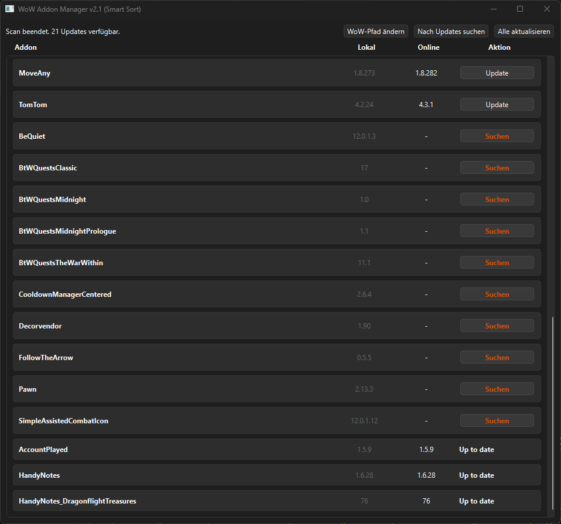

WoW Addon
Manager
Ein in Python entwickeltes Tool zum automatisierten Herunterladen, Aktualisieren und Verwalten von World of Warcraft Addons. Das Programm vergleicht lokale Versionen mit Online-Repositories und hält die Modifikationen der Nutzer selbstständig auf dem neuesten Stand.
- Sprache Python 3
- Architektur Objektorientiert (OOP)
- Features Web-Scraping, File-Management, API-Handling
api_client.py
Python
import requests
import re
def
scrape_curseforge_id(addon_name, client_type="retail"):
"""Sucht die Project-ID via Web-Scraping (Fallback zur
API)"""
# Normalisiert den String für die URL-Struktur
slug = re.sub(r'[\s_]+',
'-', addon_name).lower()
if client_type ==
"classic"
and
"classic"
not in slug: slug +=
"-classic"
url =
f"https://www.curseforge.com/wow/addons/{slug}"
try: response =
requests.get(url, timeout=10)
# Headers omitted
if response.status_code == 200:
# Extrahiert die ID direkt aus dem DOM
match = re.search(r'class="project-id">(\d+)</span>', response.text) if match:
return match.group(1)
except
requests.exceptions.RequestException:
return None
User Interface
Das Tool verfügt über ein schlankes Interface, das es dem Nutzer ermöglicht, mit einem Klick alle Addons zu synchronisieren, ohne manuelle Zip-Dateien entpacken zu müssen.
